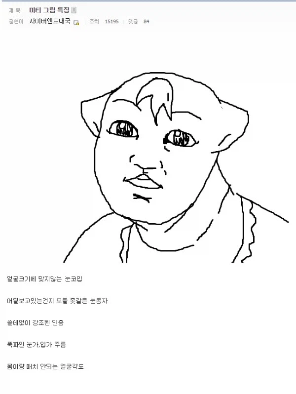
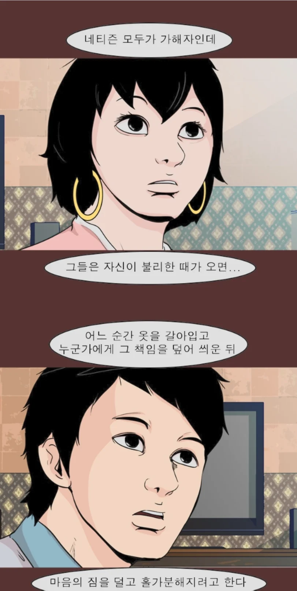

미티가 저 짤은 진짜 본건지 불명이지만
저 짤 뒤로 그림은 직접 안그리고 스토리 작가로만 활동함


미티가 저 짤은 진짜 본건지 불명이지만
저 짤 뒤로 그림은 직접 안그리고 스토리 작가로만 활동함
근데 좀 좆같긴함
인중하고 턱살 왜그리는거임?
원래 그림체가 한번 굳어지면 고치기 힘듦ㅋㅋ
머리로는 고쳐야지 해도 손이 못 따라감
잘나가던??
미티정도면 컨트롤제트? 그거 할 때까진 일단 미티 이름값으로 순위권 들었었는데
컨트롤제트까지는 이름값 높던 인기 작가였음. 전작인 일등당첨이 무난하기도 했고.
하지만 컨트롤제트부터 용두사미 대명사가 되고, 발전 없는 작화 때문에 추락함.
미티 스토리 짜는법도 참피물하고 좀 어울릴 것 같은데 사회고발과 개인경험과 불쾌함 사이의 어딘가에 있는
그림보면 거의 뭐 템플릿 그림 몇개 그려놓은거에 머리카락만 계속 씌우는 느낌이긴하네 ㅋㅋ
미티는 예전 신대방부르스 하고 진지한 일기가 제일 재밌었고
다른 것들은 좀 그럼
예시짤 존나 웃기네 ㅋㅋㅋㅋ
근데 강풀도 그림 존나 못그리지 않음?
그런데 이상하게 영상화는 잘되더라
강풀은 초창기랑 비교하면 그림체 진짜 많이 바뀌었지. 누가 봐도 더 나아지려고 노력하는 게 보이잖아. 그리고 처음부터 그림보단 스토리가 장점이었고.
게다가 미티는 그림이 더 나아지는 거도 없었고 저 시기부터는 스토리도 망해갔으니까...
물론 강풀이 그림 잘그린단 얘기는 아님
하긴 적어도 그림에서 불쾌한 느낌은 없긴함
못그리긴 하는데 기괴함은 없지
침착맨 등장이후 못 그린다 싶은 웹툰작가가 잘 없지않나
강풀은 스토리 텔링 하나는 진짜 존나게 잘해서 그림 못그려도 상관이 없음.
강풀은 본인이 직접 자기가 그림 못그린다고 후기에 써놓을만큼 못그려서. 그냥 선천적으로 공간지각능력이 딸리는건지 누가 포즈 취한거 보고 따라그려야 한다고 그러더라.
암튼 강풀은 자기가 못그린다는거 깨끗히 인정하기도 했고 본인이 진짜로 퀄리티 높이고 싶은 작품이면 어시까지 써서 그림 퀄리티 올리려고 노력하는게 보여서 사람들이 그림가지고 잘 안깜.
나도 강풀 개인적으로 싫어하는대
스토리텔링이 씹넘사라 미티따위하곤 비교가안됨
진짜 개 불쾌함ㅋㅋㅋㅋ
걍 계속 후반 좆박는거 못고쳐서 평가 떨어진거 아닌가
이작가가 안면인식장애 있는거아녓나 누구 그래서 잘못그려도 양해해달라했는데
그건 배진수 작가 아녀?
??? 요리사가 미각장애있어서 간 못맞추면 손님이 양해해야하나?
그거는 머니게임 작가얘기인듯
묘하게 실장석 같네
눈물을 마시는 미티 짤도 있어야되는데
이것도 개성이라 요새 ai 가 난무하는 세상에 이런 그림체가 더 좋음
ㅋㅋㅋㅋㅋㅋㅋㅋㅋㅋ
진짜 불쾌하게 팩트로 조지는 그림체네 ㅅㅂ ㅋㅋㅋ